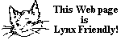

FreeBSD WWW サーバについて
マシン

すべての FreeBSD.org クラスタのシステムでは、もちろん FreeBSD が動作しています。 このハードウェアとネットワークコネクションは、 Bytemark Hosting, Internet Systems Consortium, National Chiao Tung University, New York Internet, RootBSD, Yandex, Yahoo! や他の コントリビュータ からの FreeBSD プロジェクトへの多大な寄付によるものです。
一般的にアクセス可能な FreeBSD.org ドメインのコンピュータの一覧は、 FreeBSD.org ネットワーク のページにあります。
ソフトウェア
このサイトのページは、早くて柔軟性のある、ngix ウェブサーバ で提供しています。さらに、いくらかの手製の CGI スクリプトを使用しています。CNIDR freewais の派生である freewais-sf を用いて、 メーリングリストのアーカイブの索引付けを提供しています。
ページ
これらの Web ページは、もともと FreeBSD コミュニティや あなた からの情報提供を John Fieber <jfieber@FreeBSD.org> がまとめて置いたものです。 最初の Web マスターは <wosch@FreeBSD.org> でしたが、現在では、その責務は、web およびドキュメンテーションの貢献者からなる多くの人々が参加するチームが担っています。 FreeBSD のページは XHTML 1.0 Transitional で、 すべてのブラウザで degrade gracefully になるようになっています。
FreeBSD ドキュメンテーションプロジェクト も見てください。
ページデザイン
現在のウェブサイトのデザインは、2005 年の Google Summer of Code の一環として Emily Boyd が担当しました。
オリジナルのページデザインは Megan McCormack が担当しました。
FreeBSD Web ページの構築と更新
この文書は、FreeBSD Web ページを手動で Subversion リポジトリから構築して更新する方法を解説しています。
FreeBSD Web ページの更新
www.FreeBSD.org で公開されている FreeBSD の Web ページは、 以下の時刻に再構築されています。
| 構築時刻 (UTC) | 構築の種類 |
|---|---|
| 10 分毎 | 他の構築が行われていない時に、英語版のみ www を構築 |
| 毎日曜の 00:00 | 新しいツリーをチェックアウトして、すべてを構築 |
| 1 時間毎 | 英語版のみ構築 |
| 3 時間毎 | すべてを構築 |
FreeBSD Web ページのミラー
www.FreeBSD.org の FreeBSD Web ページを ミラーできます。
FreeBSD Internal ホーム